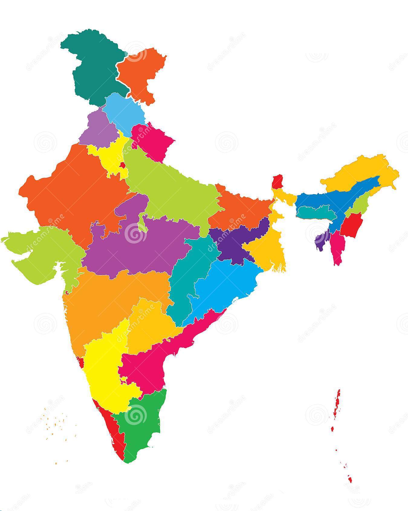

India and it's States

India: A Place of Different Cultures
India (Hindi: Bhārat), officially the Republic of India (Hindi: Bhārat Gaṇarājya), is a country in South Asia. It is the second-most populous country, the seventh-largest country by land area, and the most populous democracy in the world. Bounded by the Indian Ocean on the south, the Arabian Sea on the southwest, and the Bay of Bengal on the southeast, it shares land borders with Pakistan to the west; China, Nepal, and Bhutan to the north; and Bangladesh and Myanmar to the east. In the Indian Ocean, India is in the vicinity of Sri Lanka and the Maldives; its Andaman and Nicobar Islands share a maritime border with Thailand and Indonesia.
Modern humans arrived on the Indian subcontinent from Africa no later than 55,000 years ago. Their long occupation, initially in varying forms of isolation as hunter-gatherers, has made the region highly diverse, second only to Africa in human genetic diversity. Settled life emerged on the subcontinent in the western margins of the Indus river basin 9,000 years ago, evolving gradually into the Indus Valley Civilisation of the third millennium BCE. By 1200 BCE, an archaic form of Sanskrit, an Indo-European language, had diffused into India from the northwest, unfolding as the language of the Rigveda, and recording the dawning of Hinduism in India. The Dravidian languages of India were supplanted in the northern and western regions. By 400 BCE, stratification and exclusion by caste had emerged within Hinduism, and Buddhism and Jainism had arisen, proclaiming social orders unlinked to heredity. Early political consolidations gave rise to the loose-knit Maurya and Gupta Empires based in the Ganges Basin. Their collective era was suffused with wide-ranging creativity, but also marked by the declining status of women, and the incorporation of untouchability into an organised system of belief. In South India, the Middle kingdoms exported Dravidian-languages scripts and religious cultures to the kingdoms of Southeast Asia.
In the early medieval era, Christianity, Islam, Judaism, and Zoroastrianism put down roots on India's southern and western coasts. Muslim armies from Central Asia intermittently overran India's northern plains, eventually establishing the Delhi Sultanate, and drawing northern India into the cosmopolitan networks of medieval Islam. In the 15th century, the Vijayanagara Empire created a long-lasting composite Hindu culture in south India. In the Punjab, Sikhism emerged, rejecting institutionalised religion. The Mughal Empire, in 1526, ushered in two centuries of relative peace, leaving a legacy of luminous architecture. Gradually expanding rule of the British East India Company followed, turning India into a colonial economy, but also consolidating its sovereignty. British Crown rule began in 1858. The rights promised to Indians were granted slowly, but technological changes were introduced, and ideas of education, modernity and the public life took root. A pioneering and influential nationalist movement emerged, which was noted for nonviolent resistance and became the major factor in ending British rule. In 1947 the British Indian Empire was partitioned into two independent dominions, a Hindu-majority Dominion of India and a Muslim-majority Dominion of Pakistan, amid large-scale loss of life and an unprecedented migration.
To know more Visit: India and Culture
Developed by Gourav
Visit us at:
Github: GouravChanalia
Contact No: 9729XXXXXX
India